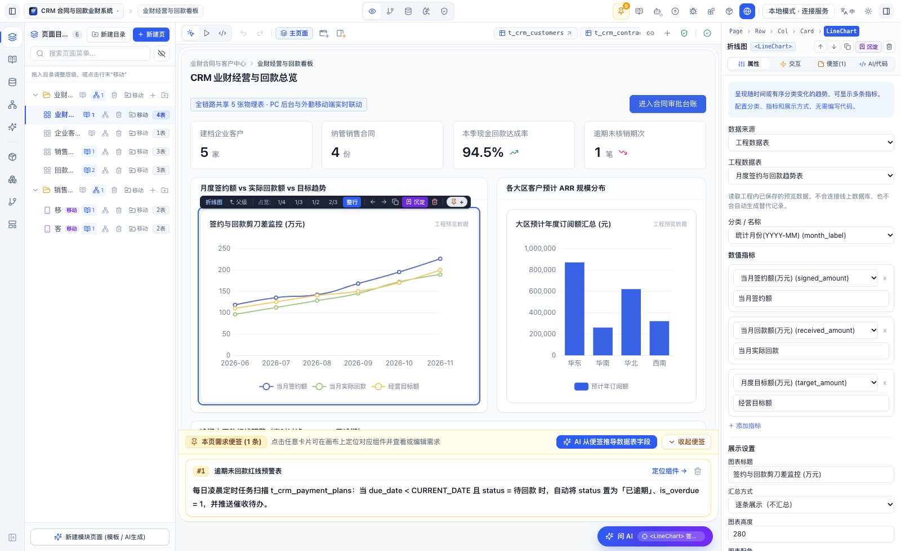

新建销售合同 / 客户
表单直接绑定物理表字段与外键下拉，提交即写入工程数据集并触发防超额与 18 位税号校验。
一面是用共享 ER 物理表驱动的开源 B 端原型（免装 Axure 直接导入 .rp、PC + iPhone 共表联动）；一面是给 Claude Code / Cursor 的双向 MCP 画布与 DDL 规格中枢。

表单直接绑定物理表字段与外键下拉，提交即写入工程数据集并触发防超额与 18 位税号校验。
外键关联客户主表，含状态机枚举与主子表分期回款复合唯一约束，改动字段即时追踪受影响页面。
contract_noUNIQUEcustomer_idFK → t_crm_customersstatusENUM('待审','履约中')received_amountDECIMAL(14,2)与 PC 后台共享同一数据集，手机端点击审批生效或提交开票后 PC 合同台账实时同步状态。
不必把 PC 与移动端拆成两套文件。同一工程下表单、台账、ECharts 与 iPhone 移动端共用一套物理表，审批状态即时互通。
打开移动端审批演示 →在桌面端开启「MCP 双向设计」，Codex、Google Antigravity、Claude Desktop 或 Claude Code 可基于当前选中组件实时建模建表、局部精修页面，并截图自我检查排版。
产品发布在线评审链接后，工程师在 IDE 中复制一条远程 MCP 配置，即可让 Coding Agent 直接读取路由树、PostgreSQL/MySQL DDL、页面 TSX 与黄色需求便签写代码。
{ "mcpServers": { "protoflow": { "url": "https://demo.team/api/v1/mcp/<shareId>" } } }将 Axure RP 9 / RP 11 源文件拖入启动页或工作台，Worker 在本地还原多级目录、组合、静态表格单元格、母版实例与动态面板状态，不上传云端。
支持按单页、目录或全工程运行只读盘点与迁移草案，让你逐项核对原型表头与真实物理表字段映射，严防误改行内操作或倒置绑定。
在同目录生成绑定共享 ER 表的 QueryForm + Table + Descriptions 交互页面，保留原始 RP 页对照，并提供已转换 / 保留 / 待处理清单。
为什么选择 ProtoFlow AI
不是又一个只会画静态线框图的画板，也不是改一处就整页重洗的 HTML 生成器。
| 评估维度 | 传统静态原型工具 | 一次性 AI 网页工具 | ProtoFlow AI |
|---|---|---|---|
| 跨页数据流转 | 静态假字，提交表单不会进入列表页 | 单页硬编码 Mock，切页或刷新即丢状态 |
绑定真实工程物理表（ER），多页面与多端读写实时互通
|
| AI 协作方式 | 无工程级上下文理解，全靠手工拼页面 | 盲猜模糊需求直接输出整页代码，极易跑偏 |
先追问业务规则 → 确认目录与表结构方案 → 再生成
|
| 后期精修成本 | 手动逐页对齐海量画板，改动成本高 | 改一个字段常触发整页重生成，破坏既有布局 |
双向 AST 可视化拖拽 + 选中组件局部无损对话/MCP 精修
|
| 多端与旧资产 | PC 与移动端常拆两套文件，存量 .rp 难变活 | 难以同步共享同一套后台主子表状态 |
同工程混排 PC 后台与 iPhone 视口，支持 Axure .rp 本地迁移
|
| 研发交付与验收 | 依赖长篇离线 Word / 口头对齐字段约束 | 缺少表关系、唯一约束与需求闭环清单 |
组件需求便签 + 外键影响域 + 远程 MCP 直供 IDE 读 DDL/TSX
|
| 数据主权与部署 | 云端 SaaS 强绑定账号与席位订阅 | 闭源托管沙箱，无法私有化离线运行 |
Apache-2.0 开源 · 免登录本机文件优先 + Docker 3 步私有部署
|
核心能力
不再在脑图、静态画板、数据库画图与编码工具之间反复搬运上下文。
可视化建外键与复合唯一约束，表单录入立即联动台账、图表与 iPhone 视口；存量 Axure RP 9/11 (.rp) 无需安装 Axure 即可本机离线解析并升维为带数据库的交互原型。
让 Claude Code、Cursor、Codex 或 Google Antigravity 通过 18 个契约工具直接操控画布建表改页并截图自检；发布 /p/{id} 后，研发无需装客户端即可远程直读 DDL、页面 TSX 与便签规则。
内置 Hermes 引擎主动追问金额阈值、审批流和字段边界，先给出模块目录、页面清单与 ER 表蓝图，经你确认后批量生成或局部无损微调。
内置宽屏栅格、多条件组合查询、主子表、抽屉弹窗、业务复合块与沙箱自由组件，画布拖拽、属性面板调参与底层 TSX DSL 实时无损同步。
同一工程同时编排管理后台与 App / 小程序页面，提供 iPhone 真机视口、底部胶囊导航、半屏抽屉与瀑布流物料，两端天然共用一套数据库。
柱状、折线、面积、饼图、散点、雷达、仪表盘、漏斗、热力、树图与桑基图直接绑定工程物理表聚合展示；内置分屏富文本笔记、脑图与 Mermaid 模板。
把精度和校验规则直接贴在组件上；改动表字段即可查看跨页面影响范围，自动巡检断链跳转、未绑定外键与待办验收项。
工程默认以 .pflow 归档或 Git 友好目录树保存在本机；搭配开源 Docker 服务端，一键发布带密码、有效期与版本更新的 /p/{id} 浏览器评审链接。
MCP 双向设计与交付闭环
ProtoFlow AI 内置完整的 Model Context Protocol (MCP) 能力，打通「AI 辅助设计原型」与「AI 读取权威规格开发生产代码」两个阶段。
在桌面端开启「双向设计」后，外部 Agent 通过 18 个契约工具直接建表、灌入外键自洽预览数据、增量修改选中组件，并用离屏高清截图工具自检排版，每一步均支持 Cmd/Ctrl+Z 撤销。
原型发布评审链接后，前端与后端工程师无需下载客户端或 .pflow 文件，直接在 IDE 里读取完整站点树、PostgreSQL/MySQL DDL、页面 TSX 源码与组件便签约束。
{
"mcpServers": {
"protoflow": {
"url": "https://protoflow.example.com/api/v1/mcp/<shareId>"
}
}
}角色与内置样板
不用登录、不用从零拼页面，也不需要对着空白画布发呆。
AI 先追问边界条件再规划目录与物理表，需求便签直接贴在表单按钮上，Axure 老项目也能无痛迁入升级。
客户现场提的新增字段或审批节点当场微调生效，PC 录入订单后手机端即刻展示待办，发个 /p/{id} 链接就能独立体验。
通过 MCP 读取标准化的 ER DDL、外键依赖、页面 TSX 与便签校验规则，让 Claude Code / Cursor 精准生成前后端代码。
涵盖供应商准入、采购订单确认、到货入库主子表联动，内置 4 张共享物理表与 5 条算税/防超收需求便签。
预置绑定物理表的月度签约趋势折线图、大区 ARR 柱状图、回款计划与多页企业客户商机 CRUD 台账。
浏览器在线试玩 →包含 C 端探索瀑布流、B 端移动待办半屏抽屉、AI 助手页与 PC 后台跨端共享物理表实时同步演示。
模型生态
桌面端内置验证过的 Hermes 托管运行时，支持在「AI 管理中心」自由接入 14+ 主流云端模型或本地 Ollama，并按任务调节推理强度；不配置 AI 时，画布拖拽、ER 建模与在线分享同样完整可用。
品牌图标来自 LobeHub Icons（MIT），各商标归其所有者所有。
下载与部署
最新发布 版本加载中
适合你当前设备的安装包
macOS 13 及以上 · Apple Silicon / Intel
安装包沿用原应用名 Alex（Alex-*.dmg）：拖入“应用程序”后，首次打开若提示无法验证开发者，请在“系统设置 → 隐私与安全性”点击“仍要打开”（仅需一次）。
Windows 10 / 11 · x64
运行 NSIS 安装向导（文件名为 Alex-*-win-x64.exe），支持自定义安装目录与快捷方式。若出现 SmartScreen 提示，点击“更多信息 → 仍要运行”。
Debian / Ubuntu / AppImage · x64
推荐 .deb：sudo apt install ./Alex-*-linux-amd64.deb（沿用 Alex 包名），安装后支持应用内一键检查升级。
git clone https://github.com/EvanClub-Agent/protoflow-ai.git
cd protoflow-ai && npm install
npm run dev # 浏览器预览工作台
npm run electron:start # 完整 Electron 桌面端cp deploy/.env.example deploy/.env
docker compose --env-file deploy/.env -f deploy/compose.yml up -d
curl -fsS http://127.0.0.1:8088/healthz常见问题
没找到答案？在 GitHub Issues 反馈，或发邮件到 ai.agent.club@gmail.com。
是的。ProtoFlow AI（原名 Alex）基于 Apache-2.0 协议开源，个人学习、商业产品原型设计以及企业内部私有化部署全部免费且无席位限制。AI 能力由你自带的大模型账号或本机 Ollama 驱动，没有平台加价。
工程默认以 .pflow 文件和目录树保存在你的电脑本地，模型 Key 由本机 Hermes 安全存储，不强制登录账号。只有当你主动点击“发布在线分享”时，快照才会被上传到你配置的团队服务器。
直接把 Axure RP 9 或 RP 11 的 .rp 文件拖进启动页或工作台，本机即可解析目录结构、组合、静态表格与动态面板（无需安装 Axure）。导入后可继续可视化编辑，或让项目 AI 核对表头与数据库字段映射，一键升级为绑定共享物理表的交互页面。
在桌面端顶部工具栏打开「MCP 接入」即可一键安装 Antigravity 插件或导出 Claude Desktop .mcpb 扩展，让外部 AI 直接在画布上协同设计；原型发布成 /p/{id} 在线链接后，研发可直接复制远程 Streamable HTTP 配置接入 IDE 读取 DDL、TSX 与需求便签。
完全可以。免登录打开桌面端就能使用全部拖拽画布、114+ 物料、Navicat 式 ER 设计器、12 类 ECharts 图表、Mermaid 笔记与本地 HTML/工程导出功能；仅在需要团队浏览器在线看原型链接时才需连接自建 Docker 服务。
桌面客户端当前沿用应用标识 Alex（安装包名为 Alex-*.dmg / Alex-*.exe / Alex-*.deb）以保持升级兼容。社区版采用本地签名：macOS 首次打开可在“访达 → 应用程序”右键 Alex 选择“打开”，或在“系统设置 → 隐私与安全性”点击“仍要打开”（仅需一次）；Apple M 系列选 arm64，Intel Mac 选 x64。
先在浏览器试玩在线演示，或免费下载 Apache-2.0 开源桌面端开启第一套数据互通的业务原型工程。